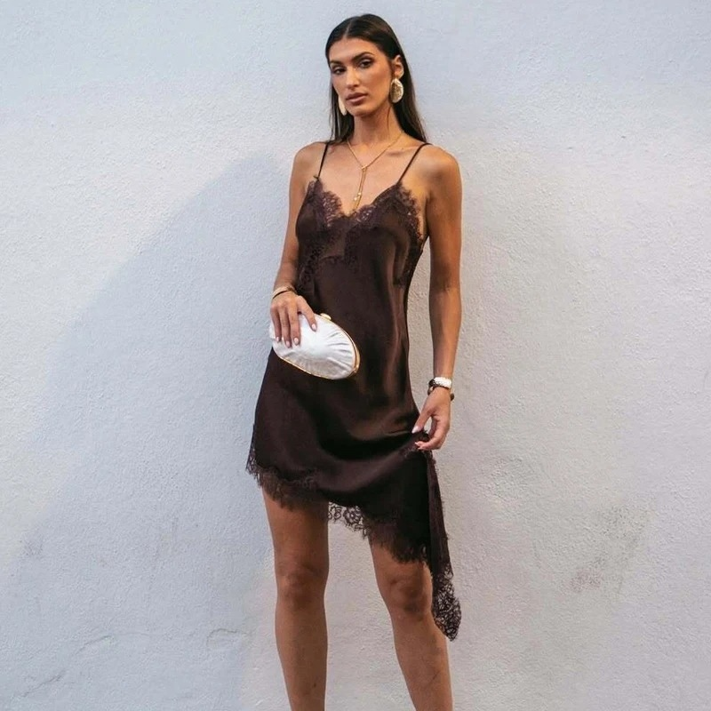

New

Dresses · New
Satin Lace Slip Mini
$48.00
$18.99
60% Off
Quietly romantic, easy to wear. This bias-cut slip falls in fluid satin from a V-neck trimmed in fine eyelash lace, then breaks into an asymmetric hem edged in the same delicate trim — short on one side, longer on the other, with movement in every step. Slim adjustable straps and a soft, body-skimming drape make it the kind of piece that works for dinner, a date, or layered under a jacket. Offered in six colorways, from espresso brown to soft sage.
- — Bias-cut satin with a fluid, body-skimming drape
- — Eyelash lace trim at the neckline and hem
- — Asymmetric handkerchief hem with lace edging
- — Slim adjustable spaghetti straps
- — Sizes S, M, L · Six colorways
Espresso
Sage
Ivory
Black
Butter
Cream
Size
Quantity
1
Free U.S. shipping · International free over $299 or $29 flat · Ships in 1–2 business days from Austin (7–21 days international). Customs duties may apply on delivery.